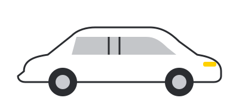
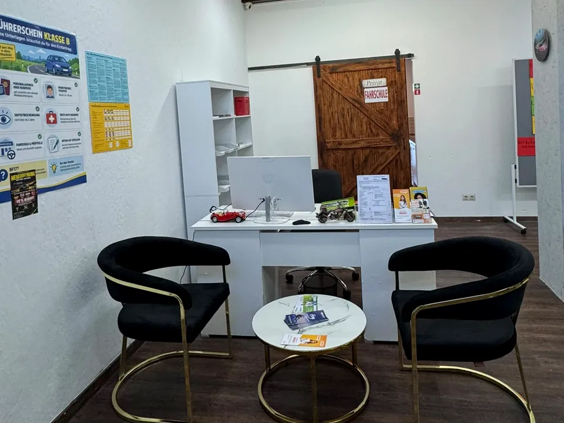
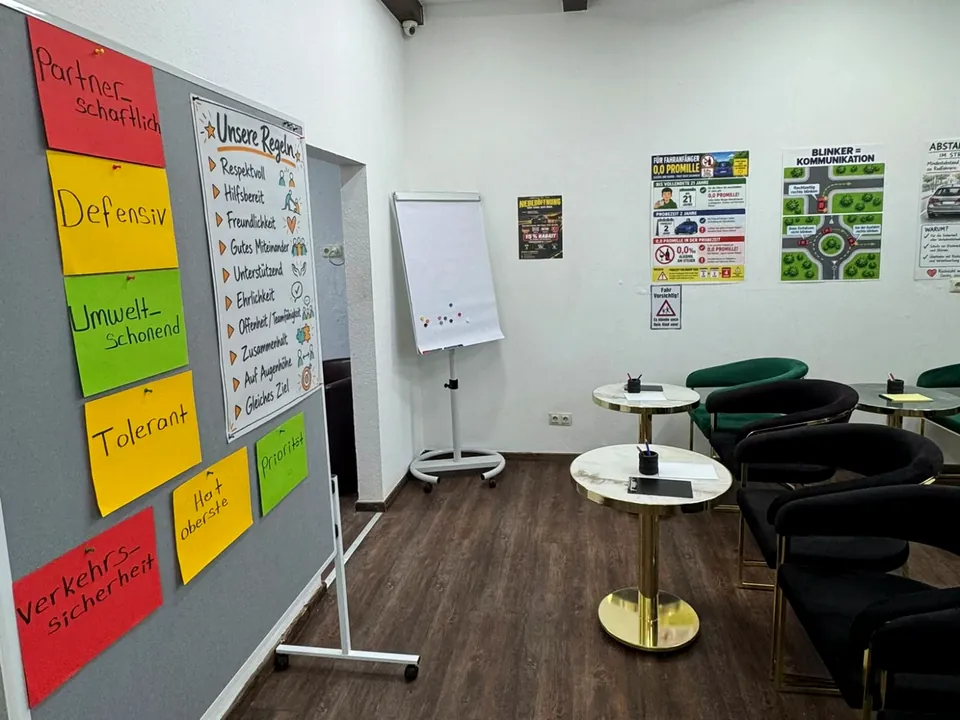
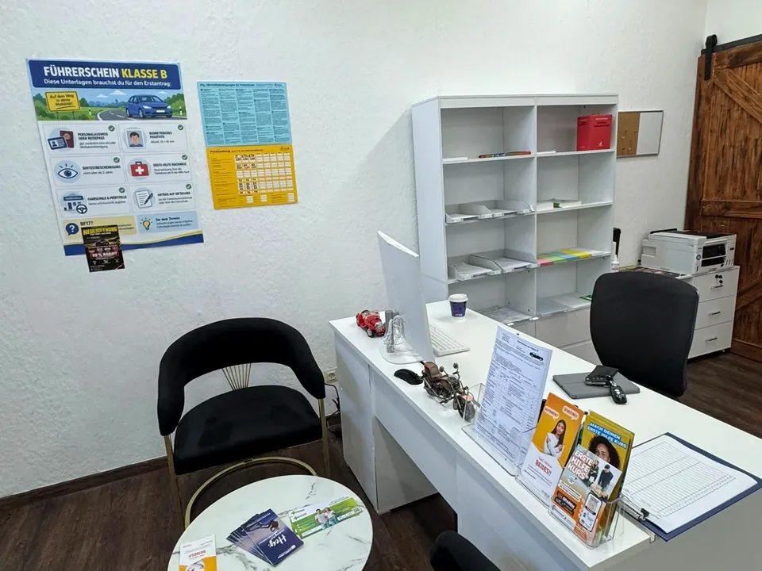

Fahrschule Easy Drive: Dein Führerschein beginnt in Weil am Rhein.
Drei Minuten vom Bahnhof Haltingen. Klasse B, B197 und BE – auf Deutsch, Englisch, Türkisch oder Kurdisch. Scroll weiter: Wir fahren die Strecke mit dir ab.
Drei Minuten vom Bahnhof Haltingen. Klasse B, B197 und BE – auf Deutsch, Englisch, Türkisch oder Kurdisch. Scroll weiter: Wir fahren die Strecke mit dir ab.
12 + 2 Doppelstunden in Haltingen. Lern-App auf Deutsch, Englisch und Türkisch – die Prüfungsfragen üben wir gemeinsam, auch auf Kurdisch.
Führerscheinantrag bei der Führerscheinstelle des Landratsamts Lörrach: Sehtest, Erste-Hilfe-Kurs, Passbild, Ausweis. Die Formulare füllen wir zusammen aus, den Termin gibt es online.
Fahrstunden in deinem Tempo – Automatik oder Schaltung. 12 Sonderfahrten: Überland durchs Markgräflerland, A5 und A98, Nachtfahrt bis an den Rhein.
Theorieprüfung geschafft? Dann bringen wir dich mit täglichen Fahrstunden und einem festen Plan in drei Wochen zur praktischen Prüfung beim TÜV SÜD.
*Voraussetzungen: bestandene Theorieprüfung und vorliegender Prüfauftrag, regelmäßige (in der Regel tägliche) Fahrstunden, verfügbare Prüfungstermine beim TÜV SÜD, Bestehen im ersten Anlauf, Mindestalter erreicht.
Ruf an, schreib uns per WhatsApp oder komm zu den Bürozeiten vorbei: Mo · Mi · Fr 16:00–18:30 Uhr. Schüler und Studierende sparen 15 % – gegen Nachweis.
Karte: © OpenStreetMap-Mitwirkende
Neu eröffnet in Weil am Rhein-Haltingen: feste Ansprechpartner, moderne Autos mit Automatik und Schaltung – und Unterricht auf Deutsch, Englisch, Türkisch oder Kurdisch.
*Voraussetzungen: bestandene Theorieprüfung und vorliegender Prüfauftrag, regelmäßige (in der Regel tägliche) Fahrstunden, verfügbare Prüfungstermine beim TÜV SÜD, Bestehen im ersten Anlauf, Mindestalter erreicht.
Drei Führerscheinklassen im Vergleich. Alle Details stehen auf der Klassen-Seite.
| Merkmal | Klasse B | Klasse B197 | Klasse BE |
|---|---|---|---|
| Was | PKW bis 3,5 t – der klassische Autoführerschein, auch mit 17 (BF17) | Automatik lernen, Schaltwagen fahren dürfen – ohne Automatik-Eintrag | Anhänger über 750 kg bis 3,5 t |
| Mindestalter | 17 (BF17) oder 18 | 17 (BF17) oder 18 | 17 (BF17) oder 18, Klasse B nötig |
| Theorie | 12 + 2 Doppelstunden | 12 + 2 Doppelstunden | keine, auch keine Theorieprüfung |
| Fahrstunden | 12 Sonderfahrten: 5 Überland, 4 Autobahn, 3 Nacht | 12 Sonderfahrten + 10 Fahrstunden und eine 15-Minuten-Testfahrt auf dem Schaltwagen | 5 Sonderfahrten: 3 Überland, 1 Autobahn, 1 Nacht |
| Prüfung | Theorie + Praxis (55 Minuten) | Theorie + Praxis auf Automatik (55 Minuten) | nur praktische Prüfung mit Gespann |
| Mehr zu Klasse B | Mehr zu B197 | Mehr zu BE |
Nach bestandener Theorieprüfung fahren wir täglich – am Ende steht die praktische Prüfung.
Grundlagen: Fahrzeug, Stadtverkehr in Weil und Lörrach, Einparken.
Die 12 Sonderfahrten: Überland, A5 und A98, bei Nacht.
Prüfungsstrecken und Prüfungssimulation – in deiner Sprache erklärt.
Praktische Prüfung beim TÜV SÜD. Bestanden? Führerschein abholen.
*Voraussetzungen: bestandene Theorieprüfung und vorliegender Prüfauftrag, regelmäßige (in der Regel tägliche) Fahrstunden, verfügbare Prüfungstermine beim TÜV SÜD, Bestehen im ersten Anlauf, Mindestalter erreicht. Mehr zum Intensivkurs
Theorie und Fahrstunden auf Deutsch, Englisch, Türkisch oder Kurdisch – damit du alles verstehst und entspannt lernst.
Wir sprechen Deutsch.
We teach in English.
Türkçe ders veriyoruz.
Em bi Kurdî hîn dikin.
Die Theorieprüfung kannst du beim TÜV SÜD unter anderem auf Deutsch, Englisch oder Türkisch ablegen. Kurdisch ist bei der Prüfung nicht wählbar – wir bereiten dich auf Kurdisch vor und üben die Prüfungsfragen gemeinsam.
Modern und sicher – mit Automatik und Schaltung.

Schwarz – Fahrschulauto für Klasse B und B197

Weiß – Fahrschulauto für Klasse B und BE
Unsere Preise für Klasse B – komplett und ohne Nachfragen. Schüler und Studierende sparen 15 %.
| Leistung | Preis |
|---|---|
| Grundbetrag (Anmeldung, Theorieunterricht, Betreuung) | 490,00 € |
| Fahrstunde Grundausbildung (45 Minuten) | 76,00 € |
| Überlandfahrt (45 Minuten) | 86,00 € |
| Autobahnfahrt (45 Minuten) | 86,00 € |
| Nachtfahrt (45 Minuten) | 86,00 € |
| Vorstellung zur Theorieprüfung | 95,00 € |
| Vorstellung zur praktischen Prüfung | 235,00 € |
| Testfahrt mit Schaltung (nur B197, 15 Minuten) | 40,00 € |
| Lehrbuch | 35,00 € |
| Lehrmaterial / Lern-App | 70,00 € |
| Nicht rechtzeitig abgesagte Fahrstunde | 50,00 € |
Nicht in unseren Preisen enthalten – du zahlst sie direkt dort.
| Gebühr | Betrag |
|---|---|
| Sehtest | 6,43 € |
| Erste-Hilfe-Kurs | je nach Anbieter |
| Verwaltungsgebühr für den Antrag | 5,10 € |
| Führerscheinstelle – Führerschein mit Probezeit | 38,30 € |
| Führerscheinstelle – Führerschein ohne Probezeit | 37,50 € |
| Theoretische Prüfung (TÜV SÜD) | 24,99 € |
| Praktische Prüfung komplett (TÜV SÜD) | 129,83 € |
Alle Preise inkl. MwSt. Stand: Oktober 2026. 15 % Rabatt für Schüler und Studierende gegen Nachweis auf die Leistungen laut Preisaushang. Die vollständige Preisliste und die Ausbildungsbedingungen hängen in unserem Büro aus.
Preisliste per WhatsApp anfragenEasy Drive ist die neue Fahrschule an der Heldelinger Straße in Weil am Rhein-Haltingen, drei Minuten vom Bahnhof Haltingen. Wir sind ein kleines Team, das sich Zeit nimmt: feste Ansprechpartner, Unterricht in vier Sprachen, moderne Autos mit Automatik und Schaltung.
Unser Ziel ist einfach: Du bestehst sicher – und hast auf dem Weg dorthin eine gute Zeit. Easy Start. Safe Drive.


Fünf Worte hängen bei uns an der Wand, bevor die erste Stunde beginnt.

Mit der Ausbildung für Klasse B kannst du ein halbes Jahr vor deinem 17. Geburtstag beginnen (Begleitetes Fahren ab 17, BF17) oder mit 17½ für den Führerschein ab 18. Die Theorieprüfung ist frühestens drei Monate, die praktische Prüfung frühestens einen Monat vor dem Geburtstag möglich.
Das hängt von deiner Zeit ab. Im normalen Tempo rechne mit drei bis fünf Monaten. Mit unserem Intensivkurs schaffst du Praxis und Prüfung in 21 Tagen – Voraussetzung ist die bestandene Theorieprüfung.
Bei B197 lernst du auf dem Automatik-Auto und machst auch die Prüfung auf Automatik. Zusätzlich fährst du mindestens zehn Fahrstunden auf dem Schaltwagen und zum Abschluss eine 15-minütige Testfahrt mit deinem Fahrlehrer. Dafür bekommst du keinen Automatik-Eintrag (Schlüsselzahl 78) und darfst beides fahren.
Personalausweis oder Reisepass, ein biometrisches Passbild, einen Sehtest (maximal zwei Jahre alt), den Nachweis über den Erste-Hilfe-Kurs (9 Unterrichtseinheiten) und die Anmeldebestätigung der Fahrschule. Für BF17 zusätzlich die Angaben zu deinen Begleitpersonen. Die Führerscheinstelle des Landratsamts Lörrach vergibt Termine online.
Zeig uns bei der Anmeldung deinen gültigen Schüler- oder Studierendenausweis. Der Rabatt gilt auf die Leistungen laut Preisaushang; alle Details besprechen wir im kostenlosen Beratungsgespräch.
Ja. Unser Team unterrichtet auf Deutsch, Englisch, Türkisch und Kurdisch. Die Theorieprüfung kannst du unter anderem auf Deutsch, Englisch oder Türkisch ablegen; Kurdisch ist bei der Prüfung nicht wählbar, wir bereiten dich aber auf Kurdisch vor.
Ja, jederzeit. Du brauchst nur die Ausbildungsbescheinigung deiner bisherigen Fahrschule. Bereits absolvierte Theorie- und Fahrstunden werden angerechnet.
Den deutschen Führerschein bekommst du nur mit ordentlichem Wohnsitz in Deutschland (mindestens 185 Tage im Jahr). Wenn du in Weil am Rhein, Lörrach oder Umgebung wohnst und in Basel arbeitest oder studierst, bist du bei uns richtig.
Bürozeiten für Beratung und Anmeldung. Fahrstunden nach Vereinbarung, auch außerhalb der Bürozeiten.

Ruf an, schreib uns per WhatsApp oder komm zu den Bürozeiten vorbei. Wir beraten dich kostenlos – in deiner Sprache.